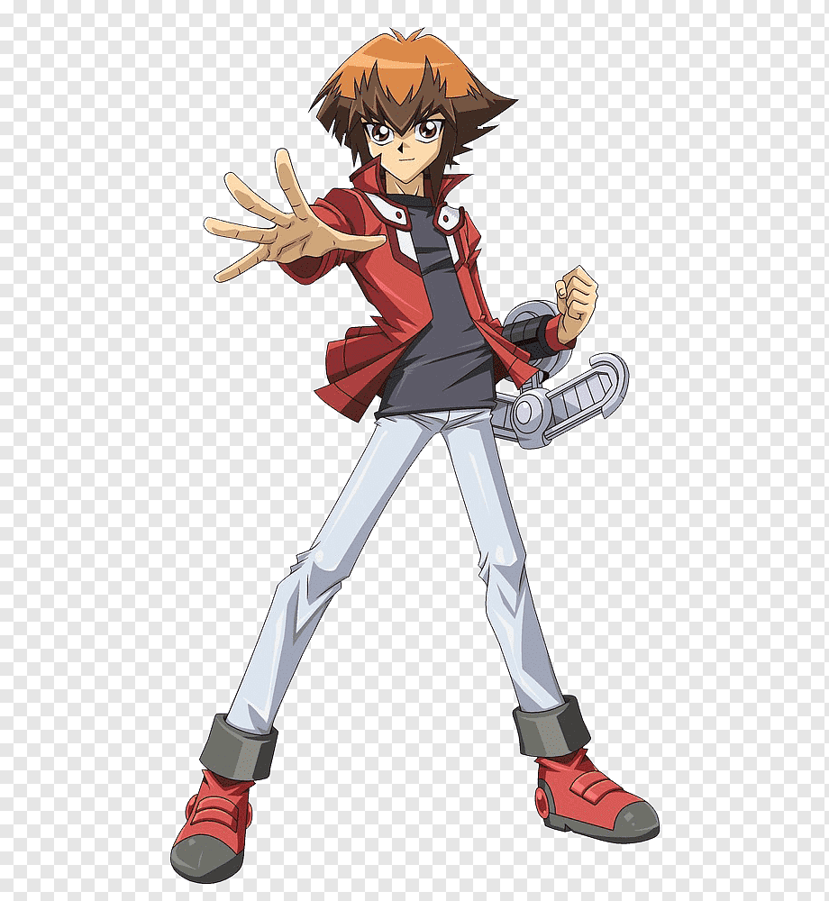
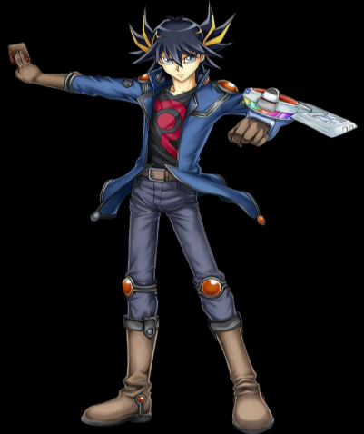
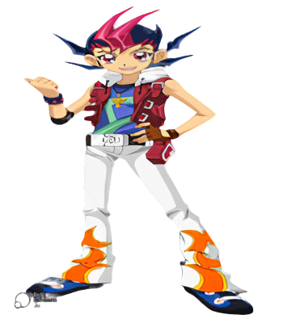
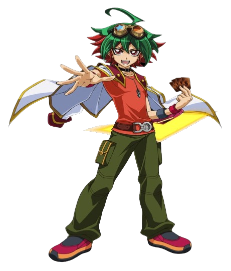

Yu-GI-OH! Fan Page
Asociate al club
Nuestros principales Duelistas




Yugi Muto (武藤 遊戯 Mutō Yūgi?) es el protagonista principal de la serie manga, la primera serie anime y la segunda serie anime de Yu-Gi-Oh!. Es bueno para los juegos y en los rompecabezas, especialmente en el Duelo de Monstruos. Posee el Rompecabezas del Milenio, lo que le permite establecer un enlace con Yami Yugi, el espíritu del faraón que fue sellado en dicho rompecabezas hace 3.000 años. De esta manera, Yami y Yugi pueden intercambiar el control de su cuerpo. Su carta insignia es el Mago oscuro